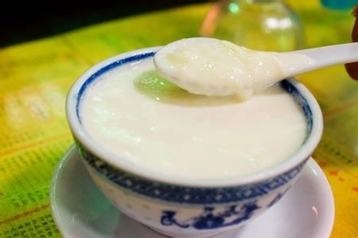

<ion-header>
  <ion-toolbar>
    <ion-buttons slot="start">
      <ion-button fill="clear"[routerLink]="['/tabs/menus']" [queryParams]="{menuId:menuId}">
        <ion-icon name="arrow-back-outline" style="height: 30px; width: 23px;"></ion-icon>
      </ion-button>
    </ion-buttons>
    <ion-title id="title_mi">大良双皮奶</ion-title>
    <ng-container *ngIf="userType==0">
      <ion-chip slot="end" color="primary" style="margin-right: 10px;" [routerLink]="['/menu-setting']"
      [queryParams]="{menuId:menuId}">
        <ion-icon name="settings-outline"></ion-icon>
        <ion-label>修改</ion-label>
      </ion-chip>
    </ng-container>

    
  </ion-toolbar>
</ion-header>

<ion-content>

  <ion-card id="card_mi">
    <ion-slides pager="true" style="height: 170px;">
      <ion-slide>
        <div>
          
        </div>
      </ion-slide>
      <ion-slide>
        图片2
      </ion-slide>
      <ion-slide>
        图片3
      </ion-slide>
    </ion-slides>


    <ion-card-header>
      <ion-card-title>
        大良双皮奶
      </ion-card-title>
      <ion-card-subtitle>
        <div style="margin-top: 15px;">
          <p style="margin-top: 0px; margin-bottom: 0px; float: left; margin-right: 20px;">月售：2012份</p>
          <p style="margin-top: 0px; margin-bottom: 0px;">尚有：72份</p>
        </div>
        
      </ion-card-subtitle>
    </ion-card-header>
    <ion-card-content>
      <p style="line-height: 27px; font-size: 15px;">
        大良双皮奶是一种甜品。主要由水牛奶、蛋清和糖等混合炖制而成，含有双层奶皮，一层甘香，二层清香，润肺养颜，堪称绝妙。
      </p>
    </ion-card-content>
  </ion-card>


</ion-content>


<ion-footer>

    <ion-toolbar>
      <ion-title>
        价格：
        <ion-label id="priceLabel_mi">￥20.20</ion-label>
      </ion-title>
      <ng-container *ngIf="userType==1">
        <ion-button slot="end" shape="round" style="margin-right: 15px; width: 30%;">点菜</ion-button>
      </ng-container>
    </ion-toolbar>

</ion-footer>